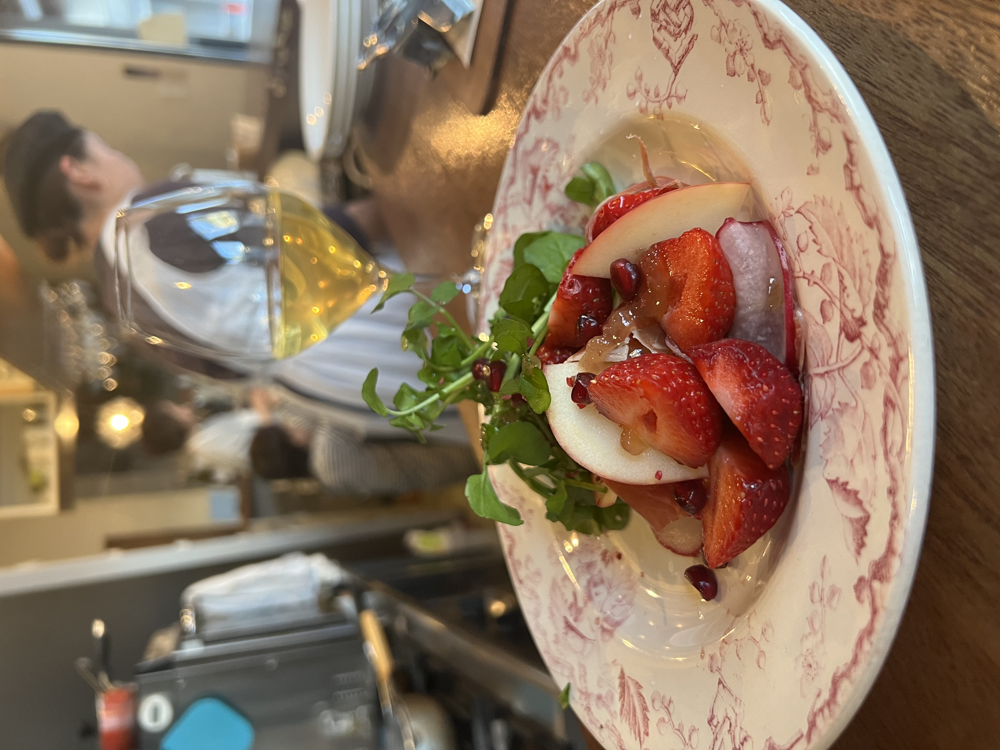
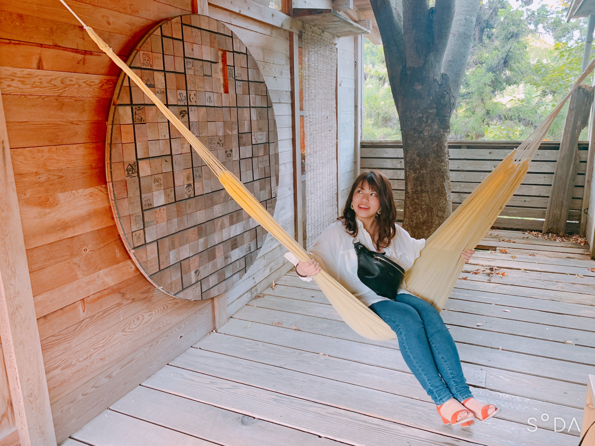

Welcome to Yuka Kuramoto Portfolio.
Scroll Down
About me
倉本 裕香/kuramoto Yuka

1997.12.28
京都府出身です。好きなことはお酒が好きなので飲みに行くことと、ダンス動画を見ることです。
資格・免許
- 全商簿記検定1級
- 全商情報処理検定2級
- 電卓計算能力検定1級
- 日本の宿 おもてなし検定中級
Career
京都明徳高等学校 商業科 卒業
2016.03高校生活では部活と検定の取得に励みました。
ダンス部に入部し全国大会に出場し部門優勝しました。
共立メンテナンス株式会社
2016.04-2021.01職種：ホテルスタッフ
- 料理配膳
- チェックイン/チェックアウトなどのフロント業務
- バーテンダー
- 発注業務
- 棚卸
- マネージメント
- マニュアル作成
- 新棟立ち上げ
株式会社エフ･オー･プランニング
2021.02-2021.12職種：携帯販売員
- 見積書/請求書など各種資料作成
- プランの提案
- 契約書記入/案内
株式会社インフィニティ
2022.01-2024.02職種：法人営業
- 見積書・請求書など各種資料作成（Word・Excel・PowerPoint）
- サービス提案
- 契約書記入/案内
- 契約後フォロー
- テレアポ業務
Strength
コミニュケーション能力
これまで接客業や営業など前職でコミニュケーションをとってきました。直接お会いした顧客が求めている事はもちろんオンラインや電話など相手の声色から感情などを読み取ることが私の強みだと考えています。また社内での報告連絡相談を徹底することで業務を円滑に進行し顧客に満足して頂ける成果を得たいと考えています。
臨機応変に対応する力
ホテルスタッフとして勤めいていた際は毎日たくさんのイレギュラーが発生しては、判断を求められる事が多くありました。営業をしていた際もお客様の急な要望に対して柔軟な対応を行うことを心掛けておりました。毎日の作業ではなくひとつひとつ向き合いながら対応したいと考えています。